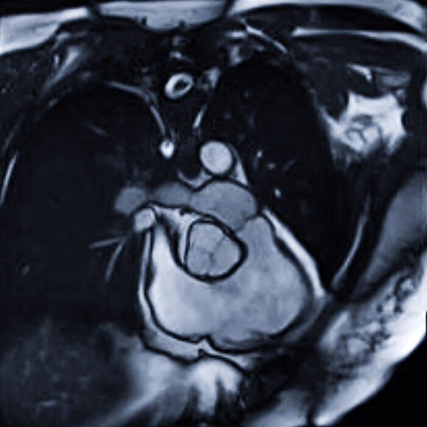
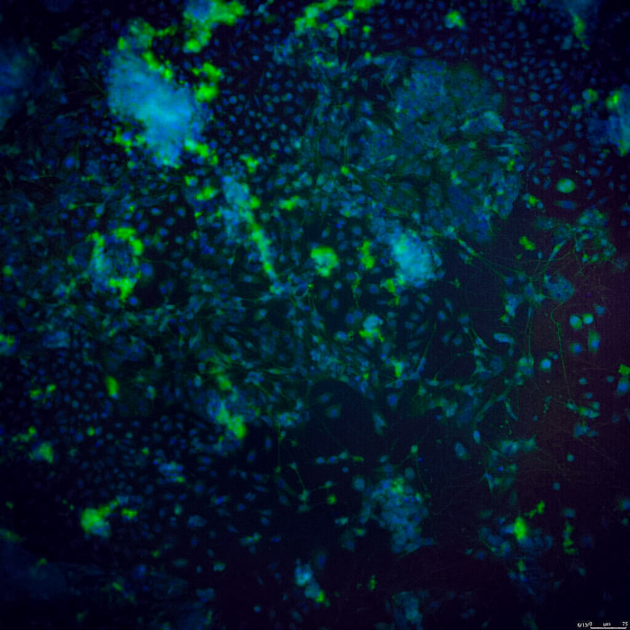

Image Reconstruction of COVID-19 Blood Clots |
Neural Networks to Automate Malaria Screening |
 Predicting Patient Outcomes through Deep Learning |
Using Data Science for Preclinical Drug Safety Assessment |
Machine Learning-Driven Design of Silver Nanoparticles |
Mechanistic Modeling of Tumor Growth |
Opioid Use in Physical Therapy After Knee Replacement Surgery |
 Stem Cell Regenerative Medicine for Spinal Cord Injury |